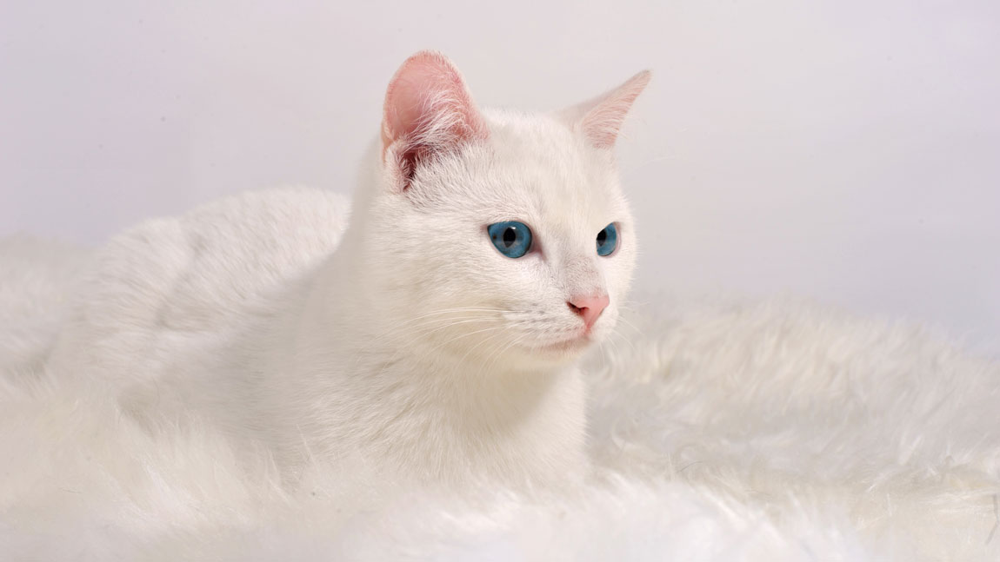
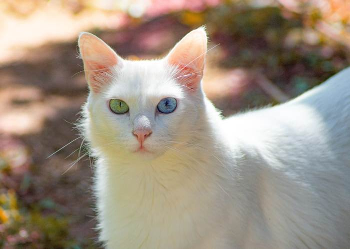
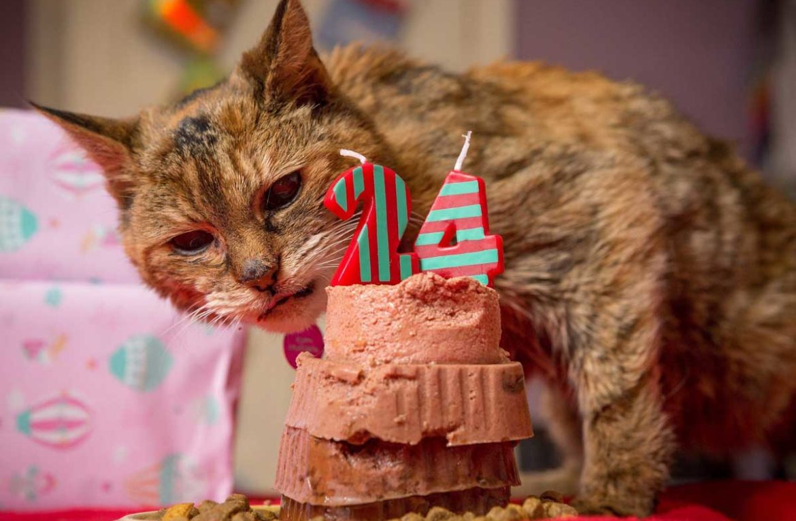
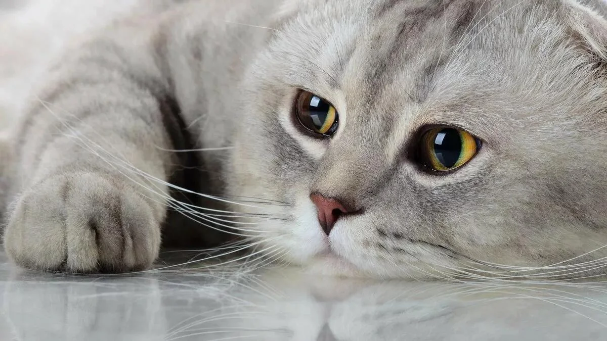
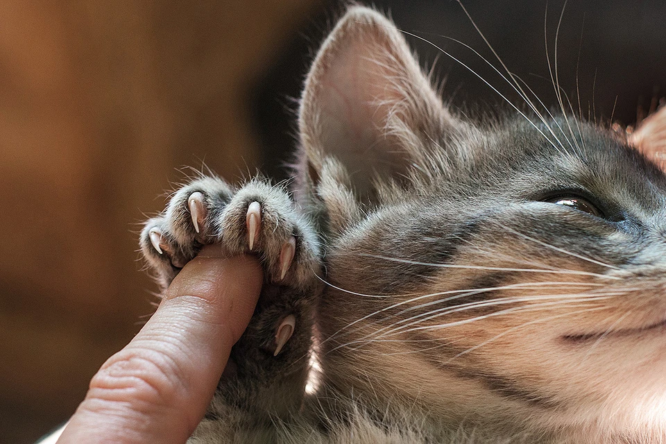

Уход

Почему белые кошки глухие?
Существует много слухов и суеверий, связанных с окрасом кошек. Трехцветные, рыжие, черные или белые..

Гетерохромия у кошек
Загадочный, почти мистический взгляд кошек становится особенно удивительным, если у животного..

Как ухаживать за пожилой кошкой?
Уже с семи-восьми лет у кошек начинаются первые возрастные изменения. Чтобы ваш питомец прожил как м..

Как развеселить кота и поднять настроение?
Уход за кошкой не сводится только к удовлетворению ее базовых потребностей. Наши любимцы – очень умн..
